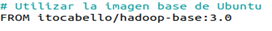
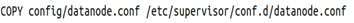
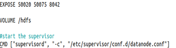

Capítulo 4. Arquitectura de Contenedores para el Despliegue del Entorno Big Data
Arquitectura de Contenedores para el Despliegue del Entorno Big Data
Arquitectura de Contenedores para el Despliegue del Entorno Big Data
La imagen itocabello/datanode corresponde al contenedor encargado de desplegar un DataNode dentro del clúster Hadoop utilizado en este proyecto.
Su función principal consiste en proporcionar el entorno de ejecución necesario para almacenar los bloques de datos distribuidos del sistema de archivos HDFS (Hadoop Distributed File System) y atender las operaciones de lectura y escritura solicitadas por el NameNode.
Esta imagen ha sido configurada específicamente para integrarse con el resto de componentes del clúster, permitiendo la comunicación con el NameNode y garantizando el almacenamiento distribuido, replicado y tolerante a fallos de la información.
La utilización de Docker facilita la creación de múltiples DataNodes mediante una misma imagen base, simplificando considerablemente el despliegue, la configuración y la escalabilidad de la infraestructura Big Data.
La construcción del DataNode comienza utilizando como punto de partida la imagen hadoop-base, que incorpora Ubuntu, Java, Hadoop, Python, Jupyter Notebook y el resto de componentes comunes del clúster.

Figura. Imagen Docker base utilizada para construir los DataNodes.
Cada DataNode necesita disponer de un directorio donde almacenar físicamente los bloques distribuidos de HDFS. Durante la construcción del contenedor se crea dicha estructura de directorios, que posteriormente será utilizada por Hadoop para guardar la información replicada.
| Directorio | Función |
|---|---|
| /hadoop/dfs/data | Almacenamiento local de bloques HDFS. |
| Permisos | Acceso para el usuario Hadoop. |
Una vez creada la estructura de almacenamiento, se copia al contenedor el archivo de configuración utilizado por Supervisor, encargado de iniciar automáticamente el servicio DataNode cuando el contenedor arranca.
| Archivo | Descripción |
|---|---|
| datanode.conf | Configuración del proceso DataNode. |
| Supervisor | Gestión automática del servicio. |

Finalmente, el contenedor expone los puertos necesarios para la comunicación con el resto del clúster y ejecuta el servicio DataNode mediante Supervisor, garantizando el inicio automático y la monitorización continua del proceso.

La imagen itocabello/datanode constituye uno de los pilares fundamentales de la infraestructura Hadoop desarrollada en este proyecto. Gracias a ella es posible desplegar de forma sencilla múltiples nodos de datos, garantizando el almacenamiento distribuido, la tolerancia a fallos y la escalabilidad del sistema HDFS.
El Dockerfile completo puede consultarse en el Anexo 7.1 – Dockerfile DataNode.